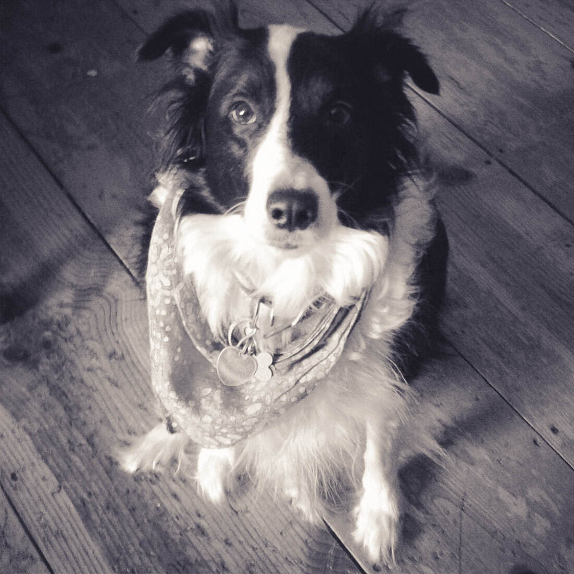

Shop
HiddenMeadows is an Etsy shop filled with handmade knitted items. Currently offering knitted wrist warmers for the wintery season. Each pair takes two days minimum to make and get ready for shipping. I use only wool that still has the lanolin oils from the sheep, so expect your knitted item to be a little water resistant and not really itchy.
You might even find a stray bit of border collie fluff, from my wool guardian Oreo. She guards the shop and makes sure that nothing is sent off to the post office without her direct approval, usually in the form of a yawn.
Shopkeeper
I'm Meira, the shopkeeper of HiddenMeadows. I've always had a passion for things that we handmade and a deep love winter. In those dark frosty month's I'm usually outside constantly so warmth is important. Whether it comes in the form of a crackling fire, a cup of hot chocolate, or just some really well made warm accessories.
I started knitting several years ago when my grandmother gave me a tattered orange suitcase for my birthday that was filled with old wool yarn, patterns from the seventies, and a single pair of bright orange knitting needles. I thought it would be amazing if I could learn to knit, then I could make all the gloves and other wintery things I could ever need. ( I tended to run through several pairs of gloves every winter. )
I have yet to accomplish the glove making dreams of my teenaged years. Instead I focus on scarf making, at the time I didn't have a single scarf and the days of sledding with a negative wind chill seemed like a lost opportunity for winter fun. Since then, I've made several wool scarves that drive the winter chill away, and the days of sledding are no longer lost to me.
I'm twenty-four years old and I still play in the snow with Oreo. Her favorite things are to sled, drive deep tunnels into the snow and catch snowballs. If they don't melt in her mouth, she throws them back at whoever sent them her way. I also spend my wintery days sledding, building igloo's and snowmen, and baking Icelandic Christmas Cakes. I welcome all kidred wintry souls to pick up their own warm accessories and get out there in the snow!
P.S.
I don't keep archives of past letters on my site. If you would like to read old letters and musings I'll give you a link to my archive on Github. There you will find a file with all of my old letters inside. Kind of like a long lost trunk in your grandmother's attic!
-

Oreo
Guardian of HiddenMeadows.
Begger of treats.
Enjoys belly rubs, chasing squirrels, and shopping.